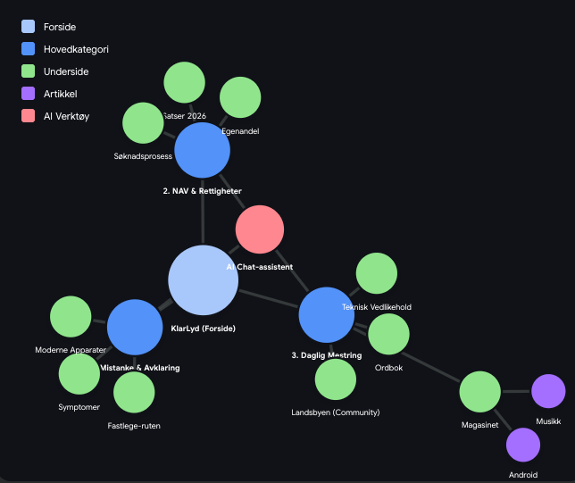

Strategisk Informasjonsarkitektur (IA) & Økosystem
1. Strategisk Fundament
Dette dokumentet definerer den helhetlige informasjonsarkitekturen for KlarLyd. Arkitekturen er ikke et tradisjonelt, statisk sitemap, men et levende Kjerne-økosystem (Hub & Spoke).
Metodikken bygger på:
- Top Tasks (Gerry McGovern): Vi prioriterer innhold brutalt basert på hva brukeren faktisk må få løst.
- Kjernemodellen (Are Halland): Hver hovedside er en destinasjon med klare innveier (søk) og utveier (handling).
- AEO (Answer Engine Optimization): Ved å bygge dype, tematisk autoritative klynger ("Hubs" med tilhørende "Spokes"), posisjonerer vi KlarLyd for fremtidens AI-søkemotorer gjennom E-E-A-T (Expertise, Experience, Authoritativeness, Trustworthiness).
2. Visuell Arkitektur (Hub & Spoke)
Selve innholdet er organisert som et solsystem. Forsiden er sentrum, med tre tunge tyngdepunkter (Kjerner), som igjen har dedikerte støtteartikler og verktøy i bane rundt seg. AI Chat-assistent ("Problemløseren") ligger aktivt over alle sider.

3. Hierarkisk Oversikt ("Max Schrøder"-modellen)
Dette er kartet over plattformen strukturert hierarkisk for å gi et raskt visuelt overblikk over hvordan sidene og lagene relaterer til hverandre.
| Z-Akse (Globalt) | ✨ AI Chat-assistent ("Problemløseren") ligger aktivt over alle sider | ||
|---|---|---|---|
| Nivå 0 (Ruter) | 🌐 KlarLyd.no (Forside / Veiviser) | ||
| Nivå 1 (Hubs) | Kjerne 1 Mistanke & Avklaring |
Kjerne 2 NAV & Rettigheter |
Kjerne 3 Daglig Mestring |
| Nivå 2 (Satellitter) | Symptomer (Sjekkliste) | Satser 2026 | Ordbok (Leksikon) |
| Moderne Apparater | Egenandel (Mellomlegg) | Magasinet (Musikk, Android) | |
| Fastlege-ruten | Søknadsprosess | Teknisk Vedlikehold | |
| Dypdykk-artikler | Avtalespesialister (Register) | Landsbyen (Community) | |
4. Innholdsmatrise og Mandat
4.1 Det Globale Laget (Z-Aksen)
- Element: AI Chat-assistent ("Problemløseren")
- Mandat: Fungerer som "Veileder" på forsiden, "Fagekspert" på kjernesidene, og "Teknisk support" i verktøykassa. Endrer atferd basert på hvilken Kjerne brukeren besøker.
4.2 Nivå 1: Kjernene (Hubs)
Dette er plattformens bærebjelker. Hver kjerne eier en spesifikk brukerreise.
| Kjerne (Hub) | Primærmålgruppe | Mandat | Kjerne-innhold (Selve siden) |
|---|---|---|---|
| 1. Mistanke & Avklaring | Tvileren & Pårørende | Trygge brukeren, ufarliggjøre tech, og vise veien inn i systemet. | Sjekkliste for symptomer, "1-2-3"-grafikk for fastlege-ruten, bilder av moderne apparater. |
| 2. NAV & Rettigheter | Nybegynneren & Pårørende | Oversette byråkrati til klarspråk. Bli den definitive E-E-A-T huben for økonomi. | Oversikt over årets satser, forklaring av "mellomlegg", krav til henvisning. |
| 3. Daglig Mestring | Nybegynneren & Veteranen | Løse praktiske problemer lynraskt og bygge lojalitet ("Omsorg"). | Store knapper for teknisk feilsøking, guide til Bluetooth, råd for mental tilvenning. |
4.3 Nivå 2: Støtteinnhold (Spokes / Satellitter)
Dette er dybdeinnholdet som sirkulerer rundt kjernene. Dette bygger tematisk autoritet for Google, og fungerer som treningsdata for AI-chatten.
| Tilhører Kjerne | Innholdstype (Spoke) | Beskrivelse / Eksempler |
|---|---|---|
| 1. Mistanke & Avklaring | Dypdykk-artikkel | "Slik tar du praten med en som hører dårlig" |
| 2. NAV & Rettigheter | Register / Linker | Oversikt over godkjente avtalespesialister |
| 3. Daglig Mestring | Ordbok | Leksikon for faguttrykk (Feedback, Hyperacusis, Kuppel). Globalt tilgjengelig for AI. |
| Magasinet | Artikler drevet av lidenskap og ekspertise (F.eks. "Høreapparat + Android", "Musikk og hørselstap"). | |
| Landsbyen | (Community). Utvei/Lenke til lukket Facebook-gruppe for skalerbar likepersonstøtte. |
5. Systemarkitektur & Datastrøm
For at økosystemet over skal fungere i praksis, kreves en moderne, frakoblet "Headless" systemarkitektur hvor innhold, presentasjon og AI snakker sømløst sammen.

Systemets Hovedkomponenter:
- Storyblok CMS (Innholdsdatabasen): Her bor all tekst for Kjernene og Spokes.
- Astro + Tailwind (Frontenden): Selve nettsiden brukeren ser. Henter innhold fra Storyblok.
- Custom Chat Shell (Grensesnittet): En skreddersydd, "KlarLyd-designet" inngangsdør for AI-en (Z-aksen).
- Google Dialogflow / CES (Hjernen): Prosesserer brukerens spørsmål (NLP) og henter riktig svar.